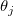
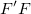
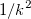
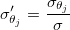
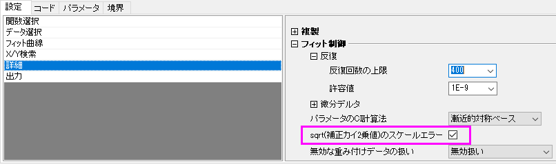
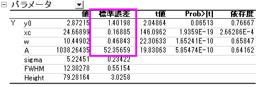
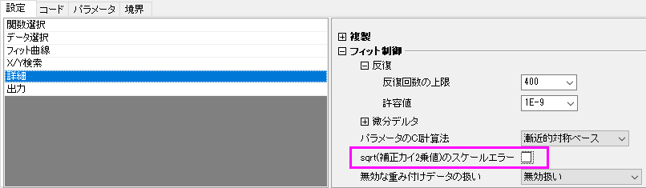
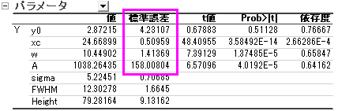

の分散 - 共分散行列は
の分散 - 共分散行列は最終更新日：2025/1/16
フィットパラメータの標準誤差（SE）および関連結果もついて、他のソフトウェアと互換性を保つために、sqrt(補正カイ2乗値）のスケールエラーのボックスにデフォルトでチェックが入っています。このチェックボックスをオンにすると、エラーバーが大きく変更されても、パラメータのSEは変わりません。機械的、任意データセットあるいは直接重み付けでデータをフィットする場合は、パラメータの標準誤差が重みに影響するため、このオプションのチェックを外して無効にすることをお勧めします。
Sqrt（補正カイ2乗値）のスケールエラーオプションは、
| Note:
このチェックボックスは、フィットしたパラメータのSEにのみ影響します。フィッティング処理やパラメータ値には全く影響しません。 |
以下では、j 番目のフィットパラメータ

のSEが、sqrt(補正カイ2乗値）のスケールエラーのチェックの有無によってどのように変化するかを議論します。簡略化のため、エラーバー は定数k を掛けたものであると仮定します。より詳細なアルゴリズムと解説については、非線形曲線フィットの理論を参照してください。
は定数k を掛けたものであると仮定します。より詳細なアルゴリズムと解説については、非線形曲線フィットの理論を参照してください。
デフォルトでは、sqrt(補正カイ2乗値）のスケールエラーが有効のとき、パラメータの分散 - 共分散行列は

と に依存します。
に依存します。
^{-1}\sigma^2")
|
(1) |
|---|
ここで、 は、i 行とj 列の編微分の行列です。
は、i 行とj 列の編微分の行列です。
}{\sigma _{y_i}\partial \theta _j}")
|
(2) |
|---|
そして、は平均残留分散であり、これは補正カイ二乗によって推定されます。
![\sigma^2 = \sum_{i=1}^n \frac{1}{{\sigma_{y_i}}^2} \left[Y_i-f(X, \boldsymbol{\theta}) \right ]^2/df_{\text{Error}}](../images/Why_Parameters_SE_remains_unchanged_when_error_bar_is_scaled/math-2b99055505274076d087ee5119593bb0.png "\sigma^2 = \sum_{i=1}^n \frac{1}{{\sigma_{y_i}}^2} \left[Y_i-f(X, \boldsymbol{\theta}) \right ]^2/df_{\text{Error}}")
|
(3) |
|---|
のSEは行列の主対角値の平方根です。

|
(4) |
|---|
エラーバーは、k の因子により変わる場合、との両方は因子

によって変わり、kはSEの計算を打ち消します。したがって、エラーバーがスケールされたときに、SEは変わりません。sqrt(補正カイ2乗値）のスケールエラーがチェックされていない場合は、は分散 - 共分散行列を計算する際に除外されることを意味し、行列は^{-1}") のみに依存します。
のみに依存します。
^{-1}")
|
(5) |
|---|
SEは以下のようになります
 |
(6) |
|---|
エラーバーにk を掛けた場合、SEもk 倍となります。
モデルをフィットした後、補正カイ二乗値を使って、重みが真のYエラーを表現しているかどうかを確認できます。sqrt(補正カイ二乗値)のスケールエラーオプションにチェックを入れた時と外した時とで、パラメータの標準誤差が大きく異なる場合は、重みは真のYエラーを表現していません。詳細は、このページをご覧下さい。
以下の簡単なサンプルで、sqrt(補正カイ二乗値)のスケールエラーオプションがフィットパラメータのSEにのみ影響を与えることを確認します。




| X | Y | Yエラー |
|---|---|---|
| 11 | 5 | 0.4472 |
| 13 | 10 | 0.6324 |
| 15 | 19 | 0.8718 |
| 17 | 27 | 1.0392 |
| 19 | 49 | 1.4 |
| 21 | 65 | 1.6124 |
| 23 | 77 | 1.755 |
| 25 | 80 | 1.7888 |
| 27 | 77 | 1.755 |
| 29 | 59 | 1.5362 |
| 31 | 44 | 1.3266 |
| 33 | 24 | 0.9798 |
| 35 | 11 | 0.6634 |
| 37 | 14 | 0.7484 |
| 39 | 4 | 0.4 |
キーワード:フィット, 標準誤差, 補正カイ2乗値, 誤差分散